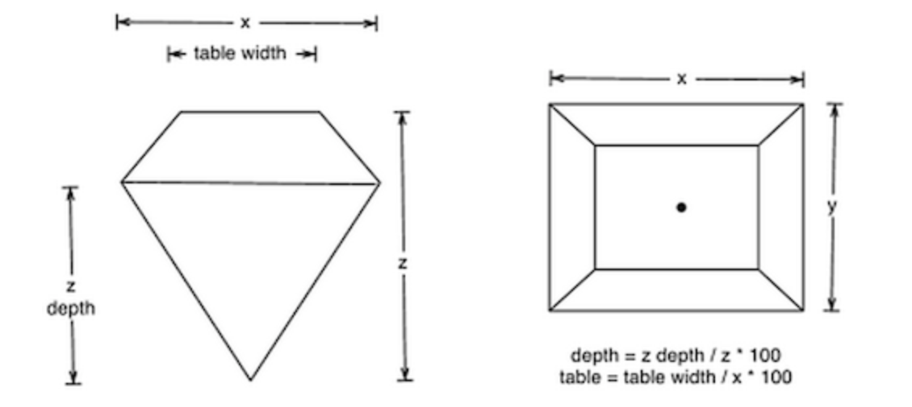
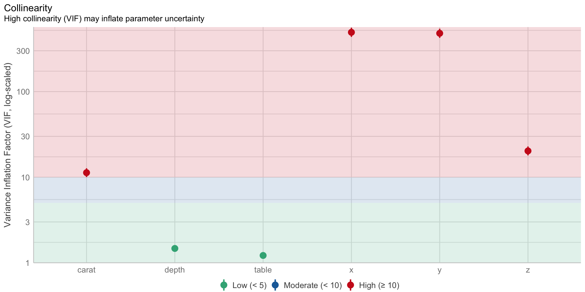

Dariusz Majerek
Analiza związków przyczynowo-skutkowych z wykorzystaniem metod ilościowych to bardzo trudne zadanie ze względu na kilka przyczyn:
nasza wiedza bazuje na próbie (często tylko jednej)
często nie znamy charakteru zależności pomiędzy cechami (liniowa, nieliniowa)
wysoka korelacja nie koniecznie oznacza związek przyczynowo-skutkowy
nie możemy w badaniu kontrolować wszystkich zmiennych
Metodologia badań związków przyczynowo-skutkowych podaje, że aby orzec o pewnej zależności , że jest związkiem przyczynowo-skutkowym przyczyna musi poprzedzać skutek, musi być z nim skorelowana i należy wykluczyć wpływ innych czynników mogących mieć wpływ na skutek.
Rysunek 1: Przykład pozornej korelacji na poziomie 0.998 (https://www.tylervigen.com/spurious-correlations)
Przykład 1 (wprowadzający) Badania na pojemnością płuc (ang. FEV - forced expiratory volume) wśród 606 dzieci w wieku od 6 do 17 lat, miały na celu wykazać negatywny wpływ palenia papierosów (zmienna smoking) na wspomnianą pojemność (zmienna fev). Zbiór danych zawierał ponadto dane na temat: wieku (age), wzrostu (height) i płci (gender) badanych. Badacze otrzymali nieoczekiwany wyniki kiedy przeprowadzili badanie efektu za pomocą regresji liniowej. Wyniki opisuje następujący model:
\[ \widehat{fev} = \underset{***}{2,63}+\underset{***}{0.61}\cdot smoking. \]
I choć naturalnym podejściem w tym przypadku byłoby zastosowanie testu Manna-Whitneya, to rozwiązanie z wykorzystaniem modelu liniowego jest również poprawne ponieważ pozwala zarówno na stwierdzenie istotności efektu, jak i na ocenę jego wielkości. Skąd zatem pozytywny wpływ palenia na pojemność płuc?
Wpływ na oszacowany efekt pewnej zmiennej niezależnej mogą mięć inne zmienne uwzględniane lub nieuwzględniane w modelu:
Kontynuując Przykład 1 pokażemy, że faktycznie age jest zmienną zakłócającą
| Model 1 | Model 2 | |
|---|---|---|
| smoking1 | 0.605 *** | −0.236 ** |
| (0.109) | (0.083) | |
| age | 0.248 *** | |
| (0.010) |
Po włączeniu do modelu zmiennej zakłócającej age wpływ smoking na fev z niezrozumiałego (0.605) zmienił się na bardziej prawdopodobny (-0.236). Przy okazji widzimy również, że wpływ zmiennej zakłócającej age na fev jest dodatni (0.248) co również zdaje się być właściwe, zważywszy na fakt, iż analiza dotyczy dzieci.
do statystycznej oceny, czy C jest kowariantem, włączamy ją do modelu, jako efekt addytywny. Jeśli wielkość efektu oddziaływania X na Y nie zmieniła znacznie, a jednocześnie błąd standardowy estymacji efektu X zmalał istotnie, to możemy mówić o zmiennej C, że jest zmienną towarzyszącą;
zmienne towarzyszące można zarówno włączać, jak i nie włączać do modelu. Jeśli włączymy kowariant do modelu, to skorygujemy efekt oddziaływania cechy X, ze względu na obecność zmiennej C (poprawimy w ten sposób precyzję efektu b_XY). Czasami jednak nie chcemy korygować efektu oddziaływania X na Y przez włączanie C, szczególnie gdy wpływ C na Y jest nieistotny. Jest to szczególnie zły pomysł, gdy C zależy w pewnym stopniu od X (wówczas wprowadza to dodatkowe obciążenie) (Kahan et al. 2014).
Przykład 2
Naukowcy badali wpływ ćwiczeń fizycznych na obniżenie poziomu lęku. Dlatego też przeprowadzili eksperyment, w którym zmierzyli wynik lęku u trzech grup osób wykonujących ćwiczenia fizyczne na różnych poziomach intensywności (podstawowym - grp1, umiarkowanym - grp2, wysokim - grp3). Badanie niepokoju (ang. anxiety) było przeprowadzone w trzech momentach czasu (t1 - na początku eksperymentu, t2 - w połowie trwania eksperymentu, t3 - na końcu eksperymentu). Badacze przypuszczają, że poziom niepokoju towarzyszący osobie na początku może mieć wpływ na poziom końcowy. Dodatkowo podejrzewają również, że intensywność ćwiczeń może mieć wpływ na poziom niepokoju na końcu badania.
| Characteristic | grp1, N = 151 | grp2, N = 151 | grp3, N = 151 | p-value2 |
|---|---|---|---|---|
| t1 | 17.09 (1.63) | 16.65 (1.57) | 17.01 (1.32) | 0.7 |
| t3 | 16.51 (1.56) | 15.53 (1.70) | 13.56 (1.42) | <0.001 |
| 1 Mean (SD) | ||||
| 2 One-way ANOVA | ||||
Rysunek 2: Analiza związku pomiędzy początkowym i końcowym poziomem niepokoju w podziale na grupy aktywności fizycznej. Zbliżone nachylenia prostych regresji mogą sugerować brak interackji (czyli współoddziaływania poziomu początkowego lęku t1 i grupy group na końcowy poziom zaniepokojenia t3). Efekt interakcji weryfikowany testem częściowym F okazał się nieistotny (p=0.41)
| Model 1 | Model 2 | |
|---|---|---|
| t1 | 0.966 *** | 0.987 *** |
| (0.138) | (0.049) | |
| groupgrp2 | −0.546 ** | |
| (0.177) | ||
| groupgrp3 | −2.874 *** | |
| (0.176) |
Zgodnie z oczekiwaniami włączenie do modelu zmiennej towarzyszącej group nie wpłynęła znacząco na wielkość efektu początkowego poziomu lęku (zmiana z 0,966 na 0,987), natomiast blisko trzykrotnie zmniejszył się błąd standardowy estymacji (zmiana z 0,138 do 0,049), co oznacza poprawę precyzji oszacowania efektu.
istnieje kilka metod statystycznej oceny czy zmienna M jest mediatorem:
Baron-Kenny - porównująca modele regresji pomiędzy analizowanymi zmiennymi z/bez włączania mediatora oraz model opisujący związek pomiędzy X i M,
modelując równania strukturalne (ang. Structural Equation Modeling - SEM),
test Sobela (Sobel 1982),
test Preachera-Hayesa (bootstrapowy) (Hayes 2015);
efekt włączenia mediatora powinien być podobny do efektu włączania zmiennej zakłócającej, z tą różnicą, że zmienna M tym razem występuje “na ścieżce zależności pomiędzy X i Y”;
zazwyczaj mediatora nie włącza się do ostatecznego modelu, poza przypadkami gdy chcemy oszacować bezpośredni i pośredni wpływ X na Y.
Przykład 3 Korzystając z danych z Przykład 1 przeprowadzimy badanie związku pomiędzy wiekiem (age) a FEV (fev) uwzględniając mediator w postaci wzrostu (height).
| c | a | b | |
|---|---|---|---|
| age | 0.237 *** | 1.539 *** | 0.062 *** |
| (0.009) | (0.054) | (0.010) | |
| height | 0.113 *** | ||
| (0.005) |
Spełnione są warunki bycia mediatorem, ponieważ zarówno efekt bezpośredni (c) jest istotny, jak i efekt oddziaływania age na height (czyli a), a ponadto znacząco zmalał efekt oddziaływania age na fev po włączeniu do modelu mediatora height. Często zdarza się, że po włączeniu mediatora efekt główny przestaje być istotny statystycznie.
moderacja, zwana także interakcją - jest współoddziaływaniem efektu głównego X i moderatora M;
do oceny czy efekt moderacji występuje stosuje się test interakcji efektów i jeśli jest on istotny, to mamy do czynienia z efektem moderacji;
należy jednak pamiętać, że zmienna moderująca nie może występować “na ścieżce zależności pomiędzy X i Y”;
moderatory co do zasady należy włączać do modelu, ponieważ poprawiają zrozumienie panujących zależności;
Przykład 4 Przeprowadzono badania wpływu suplementacji diety na długość odontoblastów (czyli komórek odpowiedzialnych za wzrost zębów) u świnek morskich. Każde zwierzę otrzymało jeden z trzech poziomów dawek witaminy C (0,5, 1 i 2 mg/dzień) za pomocą jednej z dwóch metod dostarczania, soku pomarańczowego (kodowana jako OJ) lub kwasu askorbinowego (kodowana jako VC). Jako efekt główny potraktujemy poziom dawkowana (dose) a potencjalnym moderatorem będzie sposób dostarczania witaminy C (supp).
| Model 1 | Model 2 | Model 3 | |
|---|---|---|---|
| dose | 9.764 *** | 9.764 *** | 7.811 *** |
| (0.953) | (0.877) | (1.195) | |
| suppVC | −3.700 ** | −8.255 *** | |
| (1.094) | (2.236) | ||
| dose × suppVC | 3.904 * | ||
| (1.691) |
Rysunek 3: Wykres zależności pomiędzy wielkością dawkowania witaminy C a długością odontoplastów w podziale na sposoby dostarczania witaminy C
nadmiarowość to pojęcie używane w przypadku zmiennych objaśniających modelu, które wykazują wysokie korelacje z innymi zmiennymi objaśniającymi (ang. collinearity) lub też są kombinacją liniową innych zmiennych objaśniających (ang. multicollinearity);
w literaturze spotykamy rozróżnienie na całkowitą nadmiarowość (ang. perfect collinearity) - gdy wspomniane wyżej związki można wyrazić funkcyjnie; w przypadku gdy wspomniane związki mają charakter stochastyczny mówimy o zwykłej nadmiarowości;
do wykrywania nadmiarowości używa się najczęściej współczynnika \(VIF=\frac{1}{1-R^2_j}\) (ang. Variance Inflation Factor), gdzie \(R^2_j\) jest współczynnikiem determinacji modelu pomocniczego, w którym zmienna objaśnianą jest \(X_j\) a pozostałe są zmiennymi objaśniającymi; czasami stosuje się też współczynnika tolerancji \(tol = 1-R^2_j\),
co do zasady zmienne nadmiarowe wyklucza się z modelu, ponieważ nie wnoszą one nowej informacji, a jednocześnie podwyższają błędy standardowe estymacji pozostałych zmiennych objaśniających;
Przykład 5 Dane pochodzą z badania blisko 54000 diamentów w roku 2008 (Wickham et al. 2018). Objęło 10 parametrów: cenę (price), wagę (carat), jakość cięcia (cut), kolor (color), przejrzystość (clarity) oraz kilka parametrów określających wymiary diamentu przedstawionych na Rysunek 4. Ze wspomnianego zbioru wylosowano jedynie 1000 obserwacji do dalszych analiz.

W celu określenia wpływu poszczególnych parametrów na cenę zbudowano model zawierający wagę oraz wymiary diamentu. Otrzymano następujący model
| term | estimate | std.error | statistic | p.value |
|---|---|---|---|---|
| (Intercept) | 1.17e+04 | 3.89e+03 | 3 | 0.00277 |
| carat | 8.65e+03 | 357 | 24.2 | 3.7e-102 |
| depth | -133 | 47.9 | -2.79 | 0.00543 |
| table | -69.3 | 26.5 | -2.62 | 0.009 |
| x | -3.63e+03 | 1.02e+03 | -3.57 | 0.000372 |
| y | 3.96e+03 | 1.01e+03 | 3.92 | 9.43e-05 |
| z | -1.19e+03 | 331 | -3.58 | 0.000357 |
Przy czym niektóre zmienne okazują się być nadmiarowe, ponieważ
Rysunek 5: Współczynniki VIF dla poszczególnych zmiennych modelu
Nie zaleca się usuwania jednocześnie wszystkich zmiennych wykazujących nadmiarowość ponieważ po usunięciu części redundandnych zmiennych inne mogą przestać wykazywać nadmiarowość. Zaleca się pojedynczą eliminację nadmiarowych zmiennych zaczynając od tej, która wykazuje największą nadmiarowość.
Po usunięciu zmiennych x i y nie ma już zmiennych z wysoką nadmiarowością
Rysunek 6: Współczynniki VIF po usunięciu x i y
Efektem usunięcia zmiennych nadmiarowych jest spadek błędów standardowych estymacji oraz zmiana wielkości efektów
| Model 1 | Model 2 | |
|---|---|---|
| carat | 8648.819 (357.194) | 8744.660 (284.897) |
| depth | −133.492 (47.905) | −172.435 (42.228) |
| table | −69.317 (26.485) | −93.046 (26.001) |
| x | −3630.587 (1016.469) | |
| y | 3962.311 (1010.570) | |
| z | −1187.203 (331.414) | −760.499 (197.210) |
Inauguracja roku akademickiego 2022/2023 na Wydziale Podstaw Techniki